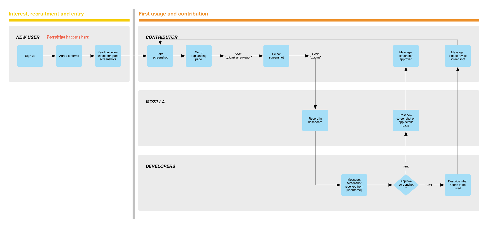
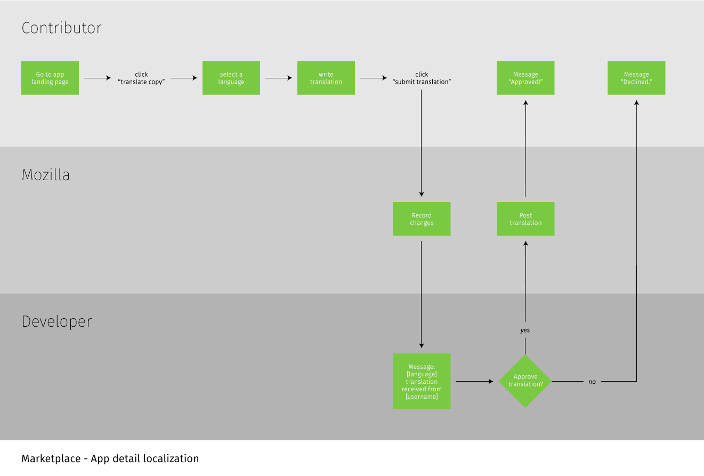
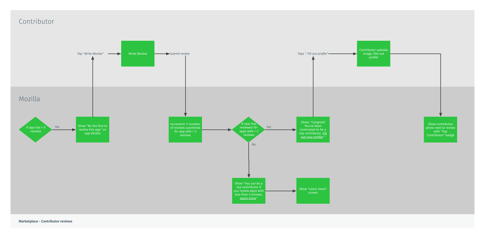
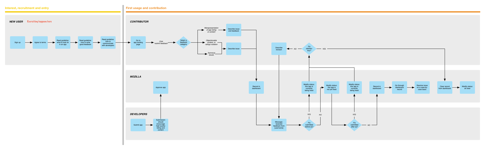

---
layout: MarketplaceUXSpec
multipage: false
---	

<div class="container">
	<h1>Customer Journey Map</h1>

	<!-- Pagination. If you have more than one page, set the multipage variable in the Frontmatter to true. Editing the pagination code happens in /_includes/homePagination.html. -->
	{% if page.multipage %}
		{% include homePagination.html %}
	{% endif %}

	<div class="col-sm-12 col-md-12 col-lg-12">
	
	  <h2>What is it?</h2>
	  
	  <p class="longText">The customer journey map is a tool that we use to communicate the journey of our <a href="audience.html">contributors</a> and their points of interaction with the Marketplace service. The entire service is combined under a catchall term called ‘Mozilla’ for the sake of simplicity, but can be broken down further into e.g. Editorial Team, Community Team, system, and so on.</p>
	  
	  <p class="longText">The map doesn’t aim to represent the deepest details. There’s no screen prototype or detailed feature requirement. Instead, it conveys actions, processes, and information flow between multiple actors. For instance: somebody goes here, then the info is handed off to this system, then the system does this, then it’s handed off to some other person, etc.</p>
	  
	  <p class="longText">The journey is structured into four phases:</p>
	  
	  <ol class="longText">
	    <li>Interest, recruitment and entry</li>
	    <li>First contribution</li>
	    <li>Showcase, share and promote</li>
	    <li>Support and future contributions</li>
	  </ol>
	  
	  <h2>Needs and Answers (a.k.a. Behaviours, Triggers, etc.)</h2>
	  
	  <p class="longText">Before we look at the map, it’s helpful to look at what each <a href="audience.html">user type</a> <strong>needs</strong> in each phase, <strong>activities</strong> they do to seek fulfilment, and what <strong>answers</strong> will Marketplace service need to have for those needs.</p>
	  
	  <p class="longText">Put simply, this is a table of what everybody wants, and how everybody go about getting what they want.</p>
	  
	  
	  
	  <h2>Customer Journey Map</h2>
	  
	  <h3>Phase: Interest, recruitment and entry</h3>
	  
	  <p class="longText">Ways to recruit:</p>
	  
	  <ol class="longText">
	    <li>Banners with call-to-action</li>
	    <li>Recruitment emails sent to existing contributors</li>
	    <li>Get Involved page</li>
	  </ol>
	  
	  <p class="longText">Ways to get started:</p>
	  
	  <ol class="longText">
	    <li>Documentation: how to write good feedback for developers, how to write good review, how to translate an app landing page, etc.</li>
	    <li>Interactive guides: when first logging in as a contributor, Marketplace should help guide contributors through the user interface</li>
	  </ol>
	  
	  
	  
	  <p class="longText">After Mozilla upgrades the user’s account into a contributor’s, we move to the next phase.</p>
	  
	  <h3>Phase: First contribution</h3>
	  
	  <p class="longText">In this phase, the <a href="contributionTypes.html">types of contribution</a> diverge. They are:</p>
	  
    <ol class="longText">
      <li>Supplement app listing page with screenshots</li>
      <li>Localise app listing page</li>
      <li>Optimise the review experience for contributors and encourage review of apps with zero review</li>
      <li>Abuse patrol: submiting app feedback to developers</li>
    </ol>
    
    <h3>&rarr; Supplement app listing page with screenshots</h3>
    
    <p class="longText">This program aims to add functional, good-looking additional screenshots taken with a Firefox OS device to the app details page.</p>
    
    <ul class="longText">
      <li>Contributors have the ability to upload new screenshots from their Firefox OS phones</li>
      <li>Mozilla can track newly added screenshots</li>
      <li>Debatable: developers have the ability to approve or reject a proposed screenshot</li>
    </ul>
    
    <p class="longText">Challenges:</p>
    
    <ul class="longText">
      <li>It’s unclear whether this model requires developer approval for publishing new screenshots. If we assume that every contributor has agreed to submit high-quality screenshots, can we assume also assume good faith and publish the screenshot right away?</li>
      <li>…</li>
    </ul>
    
    
    
    <h3>&rarr; Localise app listing page</h3>
    
    <p class="longText">The localisation program translates an app’s description to non-English language used by Marketplace users.</p>
    
    <ul class="longText">
	    <li>Developers have the ability to select whether their app description can be translated by the community or should remain in its original language</li>
	    <li>Contributors can specify a language they’d like to localise in</li>
      <li>Mozilla has the ability to track translated app strings</li>
      <li>Developers can approve or reject a proposed translation</li>
	  </ul>
	  
	  <p class="longText">Challenges:</p>
	  
	  <ul class="longText">
	    <li>Translating an app’s content seems to be where the real value lies, but it’s fraught with technical difficulties. A developer might not have the budget or capability to do it, and even with community contribution, there will be thousands of strings to translate for many popular apps that use a lot of words.</li>
	    <li>If an app description is localised but app content still remains in English, it might be seen as false advertising (at worst) or disappointment (at best). Is it more accurate to have English-only description if the app content is available in English?</li>
	    <li>There are many apps. Where should contributors focus their localisation efforts on? We could have a Top 10 or Top 25 apps be localised, but they tend to be produced by big-name developers, and may be less likely to accept translation strings from our contributors.</li>
	  </ul>
    
    
    
    <h3>&rarr; Optimise the review experience for contributors and encourage review of apps with zero review</h3>
    
    <p class="longText">This program is self-explanatory. Having just one well-written review – whether it’s positive or negative – will help other users measure the quality of an app. The focus is not to get the most number of reviews for most apps in the Marketplace, but to get the highest quality and well-written reviews for apps that don’t yet have one.</p>
    
    

	  <h3>&rarr; Abuse patrol: submiting app feedback to developers</h3>
	  
	  <p class="longText">The abuse patrol program exists not to catch IP thieves or fraudsters in the act, but to empower contributors to submit feedbacks about apps directly to developers. Doing so will increase the accuracy and quality of app listing.</p>
	  
	  <ul class="longText">
	    <li>Contributors can directly give feedback to Developers</li>
      <li>Mozilla has the ability to track whether developers have applied the requested fix or not</li>
      <li>Contributors can request revision if the fix didn’t satisfy the original feedback</li>
      <li>Mozilla has the ability to inform Marketplace User by labelling app listing as “currently being fixed” or “not yet fixed”</li>
      <li>As a last resort, Mozilla has the ability to deal with each Developer on a case by case basis, in case the feedback isn’t applied</li>
	  </ul>
	  
	  
	  
	  <h3>Phase: Showcase, share and promote</h3>
	  
	  <h3>Phase: Support and future contributions</h3>
	  		
	</div>
	
		
